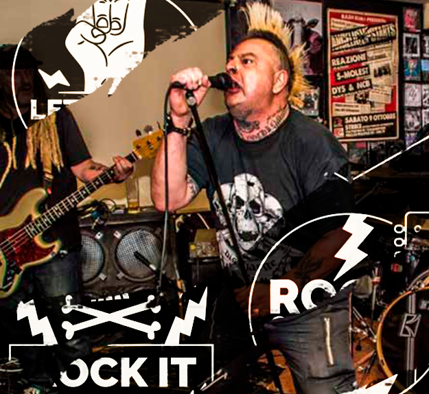

O que é o Punk Rock?
Proveniente da Califórnia, o pop punk teve muito sucesso nos anos 90 e início dos anos 2000. Assim como já diz o nome, ele combina um pouco do punk com a música pop num estilo totalmente irreverente. Algumas bandas que representam bastante esse estilo são: Blink-182, Green Day, The Offspring e Yellowcard. Ah, e só mais um detalhe, as bandas de pop punk costumam abordar temáticas adolescentes e usam bastante humor e sarcasmo em seu som, como você pode perceber no clipe de What’s My Age Again, do Blink-182